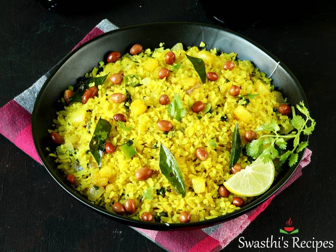

Poha

Category: Breakfast
Prep Time: 10 mins | Cook Time: 15 mins
Servings: 2
Ingredients
- 1 cup Poha (flattened rice)
- 1 Onion, finely chopped
- 1 Green chili, chopped
- 1/2 tsp Mustard seeds
- 1/4 tsp Turmeric
- Salt to taste
- Curry leaves, Lemon juice, Coriander for garnish
Instructions
- Rinse the poha in a sieve under running water. Drain and keep aside.
- Heat oil in a pan. Add mustard seeds, curry leaves, and green chili.
- Add onions and sauté until soft. Add turmeric and salt.
- Add poha and mix well. Cook for 2-3 mins.
- Turn off the heat and add lemon juice. Garnish with coriander.
- Serve hot!
Leave a Review